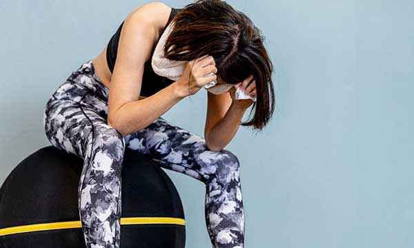

もうツライ筋トレ、
やめませんか？
やめませんか？
毎日つらいトレーニングと食事制限、止めたらあっという間に元どおり。
我慢しない＆楽しくできるトレーニングでずっと続く理想の自分。
我慢しなくてもホントに大丈夫？
既に筋トレを頑張っているのに、あまり効果を感じられなくて、続けるのが苦痛。
気軽に自宅でも始められるけど、努力している割には結果を出なくて心が折れそうな人。
減量・身体の引き締めには努力が必要ですが、我慢も辛くて続かない、
そんな方に、最適に効果をいかす筋トレ方法をご指導し、一緒に頑張っていきます。
オリジナルメソッド
生活している上で、限られた時間しかトレーニングに使えません。
毎日の暮らしの中で代謝をあげ、トレーニング時に最大級の効果を発揮させるトレーニング法です。
週1回のジム通いと、毎日のちょっとのトレーニングで、食事制限も一切ありません。
有名度だけで判断するのは危険
指導を有名度だけで良し悪しを判断するのは間違いです。
そもそも、筋肉には個性があり一人一人にあったトレーニングをしていないと成果は伸び悩みます。
クマデザインは、ヒアリングを行いそれぞれの個性に合わせた指導方法を取り入れています。
辛いトレーニングの特徴
1.筋肉に過剰に負荷をかける。
2.マシーンに頼った筋トレ。
3.プロテインをがぶ飲み。
4.胸肉だけ毎日食べてる。
DEMERIT
我慢ばなり増えて、ポイントを押さえたり理解を深めていない。

楽なトレーニングの特徴
1.正しい姿勢で体を動かす。
2.効果的なインターバル。
3.目的に合ったトレーニング。
4.長すぎない筋トレ時間。
MERIT
くり返し取り組んで効果的な動きを定着させることにより、安定して効果が向上します。
量を重視したトレーニング法は失敗。
効率的な仕組みを定着させる。
ただ筋トレ時間を増やせば良い、というわけではありません。
限られた時間のなかで、基礎理解を身に着け着実に積み上げていく事が大切です。
弊社では一人一人にあった筋トレ方法を提案し、筋肉と向き合いながら結果にコミットします。
できる環境を作る
- 生活習慣を筋トレタイムに活用する
- 一つ前の駅で降りて歩く、階段を使う、歩いて10分程度のところは歩く、歯磨きをしながら家の中を歩く、など日常生活の中で運動量を増やしてあげることが効果的になってきます。
- ジム通いは週に1回だけ
- 筋トレをした後は筋肉痛がおこり、その損傷した筋肉を回復させる時間が超回復です。超回復は約48時間〜約72時間かかり、筋トレの頻度が多すぎるとオーバーワークとなります。
- 我慢しない食事管理で毎日が楽しい
- 食事管理ができずについつい食べ過ぎてしまう事があります。 一日の自分の摂取カロリーをきちんと把握して、栄養バランスよく食べることが大切です。
よくある質問
Q. 体験とはいえ、断りにくそうで悩みます。
A. 無理にご入会を勧めることは絶対にありませんので、ご安心ください。
体験時に手ごたえを感じていただけた時にだけ申し込みをご検討ください。 ご相談だけでもOKですので、お気軽にご体験ください。
体験時に手ごたえを感じていただけた時にだけ申し込みをご検討ください。 ご相談だけでもOKですので、お気軽にご体験ください。
Q. 体験体験とはどんなプログラムですか？
A. 最初に現状のお話をお伺いします。
その後、お客様にピッタリあった筋トレ方法をアドバイスいたします。 体験の最後に、料金プランやシステムについて詳しくご案内していますので、何でもお気軽にご相談ください。
その後、お客様にピッタリあった筋トレ方法をアドバイスいたします。 体験の最後に、料金プランやシステムについて詳しくご案内していますので、何でもお気軽にご相談ください。
Q. 週1回だけでも大丈夫ですか？
A. もちろん大丈夫です。
筋トレ方法は目的に合わせて指導しますので、自力トレーニングと比べて短時間でも効率よく指導ができます。
まずは週1回で始められる方が多いですので、ご安心ください。
筋トレ方法は目的に合わせて指導しますので、自力トレーニングと比べて短時間でも効率よく指導ができます。
まずは週1回で始められる方が多いですので、ご安心ください。
Q. ジム通いの回数を増やすと料金も上がりますか？
A. 基本的には、料金は一定です。
週に3回まで一定料金のままですので、お気軽にご来店ください。
週に3回まで一定料金のままですので、お気軽にご来店ください。
無料体験・資料請求
お気軽にお申込みください
お急ぎの方はお電話にてご連絡ください。
TEL:0120-000-0000
まだ検討中ですか？
今なら「効果的な筋トレ」の成功事例をまとめたサンプル集PDFを、無料配布しております。
いますぐダウンロードできますので、お気軽にご請求してください。